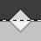
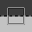
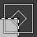
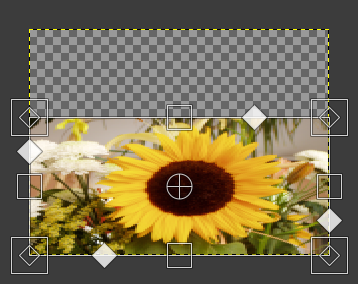
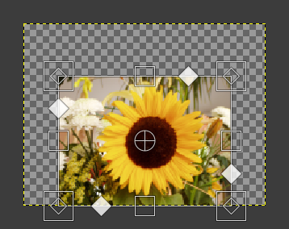
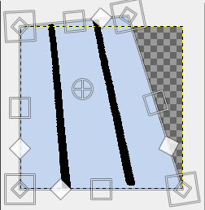
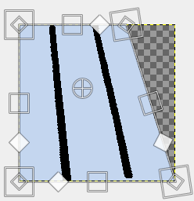
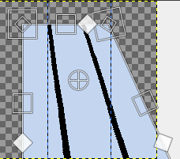

This tool combines several tools: Rotate, Scale, Shear and Perspective, performing one or several of these actions at once in one single operation. Combining two or more options gives you almost infinite possibilities of transformation.
As the other transformation tools, this tool works on the active layer (default).
After selecting the Unified Transform tool in the toolbox, click on the image window. Several elements appear on the image window:
-
Several kinds of handles, on the edges:
-

Diamonds for shearing -

Squares for scaling. -

Small diamonds for changing perspective, in large squares for Scaling.
Click and drag a handle to perform the action of the concerned tool
-
-
A circle with a cross inside at the center of the image window for the pivot. Click and drag this circle to move the pivot. It can be placed out of the image window, and even where you want on screen (but you can no longer see it, unless you enlarge the image window).
-
The mouse pointer comes with small icons which vary according to position:
-
On the layer: Move icon,
-
Outside the layer: Rotate icon,
-
On handles: Shear or perspective or Scale icon,
-
On rotation center circle: Move icon and Rotation icon.
-
-
The status bar, at the bottom of the image window, displays the name of the current tool.
There are different possibilities to activate the tool:
-
A partir do menu da janela de imagens, em: → →
-
Ao clicar no ícone da ferramenta: na caixa de ferramentas
-
Usando o atalho de teclado Shift+T.
Normally, tool options are displayed in a window attached under the Toolbox as soon as you activate a tool. If they are not, you can access them from the main menu through → → which opens the option window of the selected tool. The available tool options can also be accessed by double clicking the corresponding tool icon in the Toolbox.
- Transformar, Direção, Interpolação, Cortar, Show image preview, Guias
-
![[Nota]](images/note.png)
Nota Essas opções estão descritas em Opções em comum das ferramentas de transformação
- Restrições
-
Move: when this option is unchecked, moving the layer is smooth. Checking the option constrains movement to 45° from center.
Scale: when this option is checked, the aspect ratio is preserved.
Figura 14.116. Scale Constraint Option

"Scale" option under "Constrain" not checked; "Scale" option under "From pivot" not checked

"Scale" option under "Constrain" checked; "Scale" option under "From pivot" not checked
Rotate: default rotation is smooth. When this option is checked, rotation goes by 15° steps.
Shear: normally, to shear the layer, you drag the corresponding icon along a layer edge. If this option is unchecked (default), you may move away from this edge. If this option is checked, shear handles remain on this edge.
Perspective: normally, to change perspective, you drag the corresponding icon along a layer edge. If this option is unchecked (default), you may move away from this edge. If this option is checked, perspective handles remain on this edge or on a diagonal.
Figura 14.117. Ferramenta de Perspectiva

"Perspective" option under "Constrain" not checked; "Perspective" option under "From pivot" not checked

"Perspective" option under "Constrain" checked; "Perspective" option under "From pivot" not checked
- From pivot
-
Camada ativa
Shear: When this option is unchecked (default), the opposite edge is fixed and the pivot moves with shearing. When the option is checked, shearing is performed around a fixed pivot and the opposite side is sheared by the same amount, but in the opposite direction.
Perspective: when this option is checked, the position of pivot is maintained.
Figura 14.118. Ferramenta de Perspectiva
"Perspective" option under "Constrain" checked; "Perspective" option under "From pivot" not checked

"Perspective" option under "Constrain" checked; "Perspective" option under "From pivot" also checked
- Pivot
-
Snap: if this option is checked, the pivot snaps to center or to corners when it comes close to them.
Vetor ativo
Key modifiers are active when an action (move, scale, rotate, etc.) is selected. Hold on:
-
Shift to check all Constrain unchecked options and uncheck already checked ones if a transformation handle is selected, or, if the pivot is selected, to snap pivot to center or corner,
-
Ctrl to check all “From pivot” unchecked options and uncheck already checked ones.
When you click on the image window, the adjustment dialog appears.
- Transformar
-
A janela de informação mostra uma representação matemática da transformação de perspectiva. Você pode encontrar mais informações sobre matrizes de transformação na Wikipedia
- Readjust button
-
With this button you can reset the transform handles back to the original square shape, while keeping the current transformation and zoom level. This enables you to create more complex transformations by making the transformation in several steps.